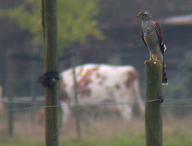
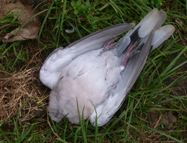

Sperwer attack
zaterdag 27 september 2003 | Natuur
Zingem, één uur geleden. Op nog geen 15 meter van mij verschalkt een wijfje Sperwer (Accipiter nisus) op spectaculaire wijze een Turkse Tortel (Streptopelia decaocto) in duikvlucht. De duif die was opgeschrikt door mijn aanwezigheid vloog weg uit een boom waar ze had zitten rusten. Op zo’n moment had de sperwer wellicht gewacht. Ik was getuige van een Top-Gun achtige actiescène, met rondfladderende pluimen en een doffe plof van een neerstortend lijk (roofvogels breken nekken). Na de aanval ging ze op een paaltje zitten om wat te bekomen. Op dat moment kreeg ze me in de gaten. Ik had natuurlijk meteen na de aanval naar mijn toestel gegrepen. Slechts één fotootje stond ze me toe, en dan was ze weg. Maar niet voor lang, dat wist ik wel. Ik maakte vlug ook een foto van het slachtoffer, en verschool me daarna in het struikgewas. Nog geen tien minuten later dook ze weer op. Sluw als ze is, was ze stiekem een heel eind over de grond tot bij het slachtoffer geslopen, als een kat in de nacht. Dan greep ze het lijk vast met haar klauwen en droeg het in vlucht enkele honderden meters verder een bosje in. Je ziet ze vaak vliegen, die sperwers, maar zo’n ervaring doet me altijd wel iets.
PS: Gefotografeerd met een Coolpix 995 digitale camera, rechtstaand zonder statief door één oog van mijn 8x verrekijker in mijn trillende handen. Kwaliteit van de foto is dus: nihil. Toch is het een mooie herinnering.


Tompie op 27 september 2003
Schone foto, maar met welke telescoop/fototoestel is dit getrokken? De koe heeft een paarse staart :-/